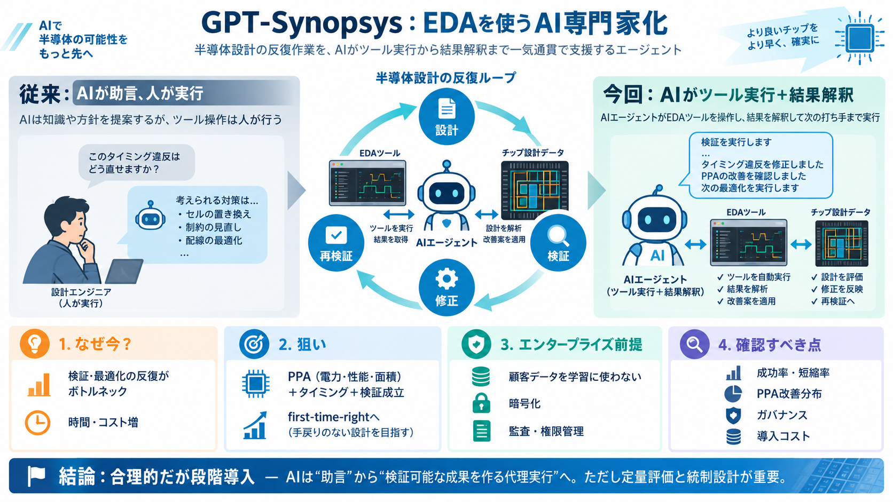

Synopsys, Inc. | OpenAI and Synopsys Announce GPT-Synopsys: Frontier Intelligence to Revolutionize Chip Design
SAN FRANCISCO and SUNNYVALE, Calif., Sept. 30, 2026 /PRNewswire/ -- Synopsys (Nasdaq: SNPS) and OpenAI today announced a…

EDA × AIの次段階
SynopsysとOpenAIが、半導体設計向けAIモデルを共同開発し、EDAツールを“使う”ところまで自律化する取り組み。
設計は“反復”が重い
半導体開発は、タイミング確認・検証・最適化などの試行錯誤が膨大で、時間とコストがかかります。
AIの役割を変える
チャットで提案するだけでなく、AIがEDAツールを直接操作し、結果を読み取りながら反復する方針が注目点です。
Japanese: 代理実行（エージェント型）＝計画・実行・反復を含む。
反復の流れ
GPT-Synopsysが設計・検証の推論を行い、Synopsysツールを操作して、変更を入れては結果を再評価します。
何が狙いか
「設計支援チャット」を超えて、AIがEDAツールの出力を読み取りながら最適化することで、リードタイム短縮につながることを狙います。
品質目標は同時に
性能だけでなく、電力・面積・タイミング・検証の成立を明確に目標へ含めます。
導入の障壁を下げる
顧客設計データを学習に使わない方針、暗号化、保持・監査・権限管理などの統制を打ち出しています。
技術デモで終わらせない
多年度の包括契約のもと、研究開発だけでなく共同販売（go-to-market）と収益分配の枠組みを含みます。
agentic AIの要点
目的（例：PPA最適化、タイミング、検証成立）を与え、AIがツールを実行して変更し、結果を解釈して前進する動作を想定します。
Japanese: 代理実行（エージェント型）＝計画・実行・例外対応まで含めてタスクを進める考え方。
期待の次に確認
本発表は方針が中心で、成功率・短縮率・検証カバレッジなどの定量データが読み取りにくい点が課題です。
結論：合理的だが段階導入
AIがアイデア提示ではなく、EDAツールと結びついた“検証可能な成果”へ近づく点は強みです。一方で、品質・運用・契約の詳細を精査して段階導入する姿勢が重要です。
参照
ユーザー提示の要約に加え、Reuters等の報道・リリース文で触れられた観点（学習サブスク費・収益分配、データ保護方針、統合の補足）を踏まえています。
SAN FRANCISCO and SUNNYVALE, Calif., Sept. 30, 2026 /PRNewswire/ -- Synopsys (Nasdaq: SNPS) and OpenAI today announced a…
"GPT-Synopsys will run on OpenAI-hosted infrastructure, will be designed to interoperate with customer agent harness sys…
SAN FRANCISCO and SUNNYVALE, Calif., Sept. 30, 2026 /PRNewswire/ -- Synopsys (Nasdaq: SNPS) and OpenAI today announced a…
SAN FRANCISCO, Sept 30 (Reuters) - Synopsys (SNPS.O), a maker of software used in designing computing chips, said on Wed…
OpenAI supports our customers’ compliance with privacy laws, including the GDPR, CCPA, HIPAA, and FERPA, and offers a Da…